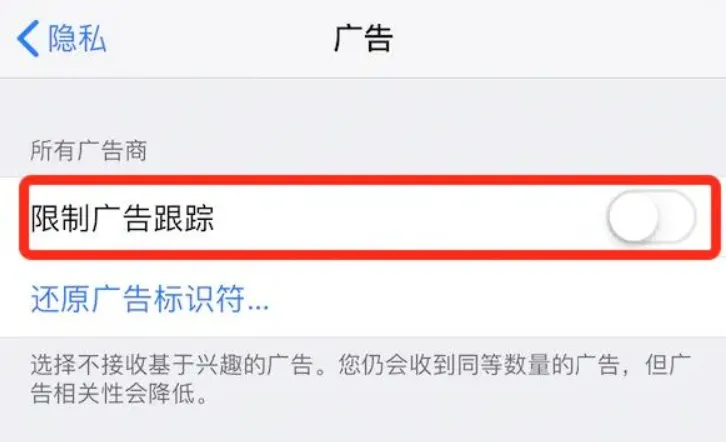
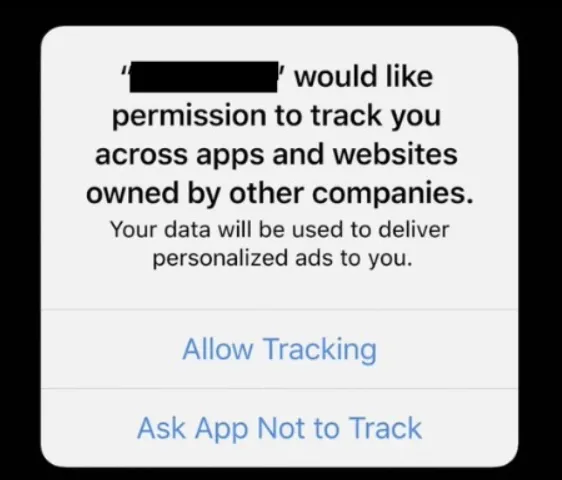
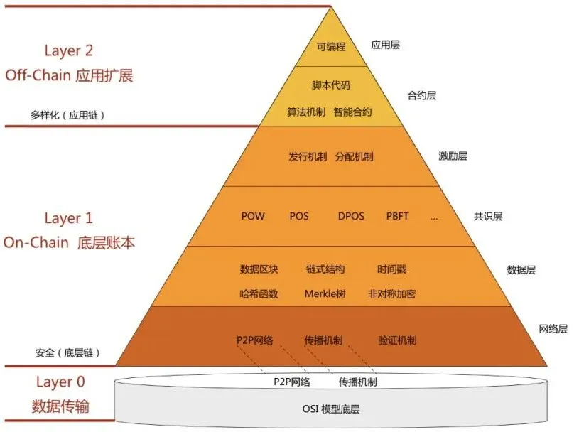
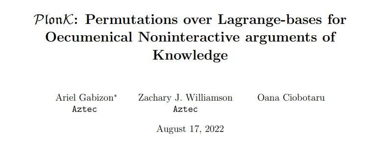
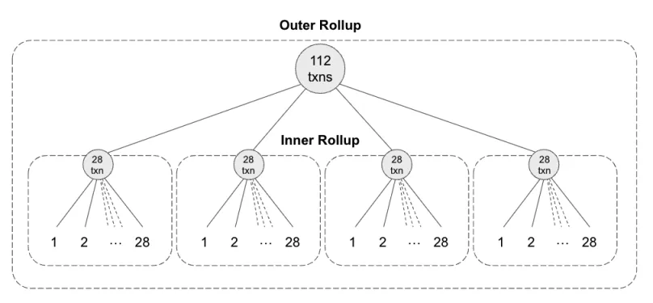
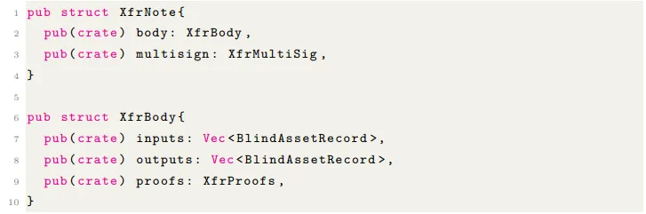
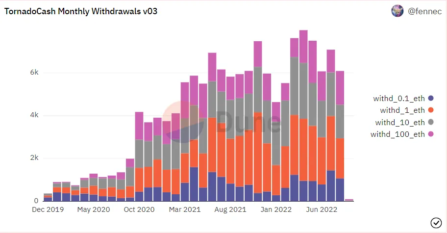

前两节讲技术和应用，后两节讲意识形态，建议根据兴趣自行跳读。
（意思是有意思的故事和理论都在后两节）
一 . 隐私、后隐私时代和温和的保护方案
隐私的概念分为两种。狭义的隐私概念是法理意义上的，是指已发生之合乎道德和法律的，但又不愿或不能公之于众的事情。这种隐私的概念暗含一种对泄露的担忧，可能是单纯的不希望被他人知晓，比如一段感情经历，也可能是担心他人借此作恶，比如银行卡的密码。
但随着技术的进步，尤其是数据收集和分析能力的进步，一些在传统观念中不属于隐私的事物似乎逐渐变得重要起来，或者说，担忧泄露的隐私范围被不断扩大。举个最简单的例子，手机的充电时间和屏幕亮起状态可以代表一个人的生活作息，地图上二维的位置坐标加上时间标签就可以代表一个人的行动轨迹，不同类别商品的点击次数和不同页面的停留时间长度可以代表一个人的消费倾向和意愿，付款的犹豫时间则可能与钱包的充实程度相关。
于是，在一个数据化的时代开始后，在人被压扁成一张"用户画像"后，广义的隐私开始出现，也就是主体的一切行为所产生的一切数据，事实上都可能成为隐私。但也正是在广义的隐私概念诞生的这个时代，隐私却彻底消亡了。
随着个人设备和互联网技术的普及，似乎隐私数据被服务供应商收集成为了一个不可避免的趋势。而针对这种趋势，最早的反对者提出了一种曲线救国的主张——进一步透明化。
即尽管我已经无法阻止数据的流失，但我仍可以要求收集数据的企业对数据流向和使用方式进行公开，似乎只要我能充分地监控数据的使用过程，就能缓解对于他人利用我的隐私作恶的担忧。这种思潮中，具有代表性的有斯坦福大学教授韦思岸（Andreas Weigend）的著作《数据为民：如何让我们的后隐私经济为你服务》。
在这本书中，韦思岸几乎是默认了包含个人隐私的数据的流失现象，他认为唯一的问题仅在于，持有数据的企业不一定在利用数据造福用户，反而有可能是在利用数据"对付"客户。在现状下，只有在用户利益诉求和企业利益诉求重合时，用户才有可能得到数据带来的利好。
因此，韦思岸将"透明"明确为一种战斗的口号，他主张向企业要求数据收集和使用的透明化，并尽可能让数据为公共安全、决策行为和财政及个人健康而服务。
尽管在我看来，一个因透明而生的问题，居然要靠进一步透明来解决，在逻辑层面本身是吊诡的。但这一主张在法律层面看起来足够可行和合理，因此事实上在后来成为了各国隐私保护工作的底层思路。
从技术的角度看，企业收集到的数据可以被分为两类，一类是不对应到单一的具体用户的匿名数据，就是我们经常在Microsoft或者Windows上看到声明"您的数据仅用于改进服务"的那些。由于其匿名性，这类数据只有在体量极大的时候才能显示出意义，事实上对于个人而言没什么威胁。
有威胁的是另一种，当然，威胁就是利益，也是企业最想获得的那种。
要获得绑定到唯一具体用户的数据，需要先解决定义用户的问题。在很多年前的Web时代，浏览器要把包括但不限于IP地址、JavaScript行为、Flash与Java插件、字体、Canvas、WebGL等多个维度的信息组合在一起，才能生成一个碰撞率足够低的用户信息库，进而锁定唯一确定的用户。这项技术的名字叫fingerprinting，意思是互联网上的指纹。
但即使如此努力，fingerprinting技术的识别依然可以被简单的浏览器配置人为规避，2018WWDC时，苹果就提到Safari已具备了抗fingerprinting的能力，Firefox会检测网站是否和主流的fingerprinting服务提供商有通信并对通信进行拦截。事实上，如果你舍得的话，禁用 Canvas、WebGL 和字体渲染也会起到类似的效果。
除此以外，Safari和Firefox分别在2020年和2019年的新版本中默认禁止了第三方cookie的传输，Chrome之前宣布的开发计划中也提到过会在2022年把samesite的默认值从none改为strict，但截至这篇文章发出来的前夜我查找Chrome的更新日志时还没有发现他们的行动。
而在进入移动时代以后，数据的获取就变得容易得多，Android和iOS系统在早期都提供了唯一的设备标识符（苹果后来对这一问题做了修改），APP的提供方可以直接据此锁定某个特定的设备。
但设备的供应商一样采取了大量的措施对此进行干预，苹果系统从2012年9月发布iOS6开始，就新增了 Identifier for Advertising (IDFA)，也就是俗称的广告标识符以代替设备标识符，并在2013年的5月份宣布彻底禁止获取UDID的APP在App Store上架。四个月后，苹果在iOS7中增加了重置IDFA的功能，用户可以自行在设置里重置IDFA以避免追踪。
2019年10月，苹果的iOS10进一步增强了IDFA政策的隐私保护力度，用户可以自选将IDFA重置为一长串0以彻底摆脱追踪。在iOS6到iOS14的漫长岁月里，IDFA都是苹果保护用户隐私最主要的工具之一。
而除了IDFA以外，苹果还推出过只要卸载应用再重新安装就会改变的Universally Unique IDentifier（UUID）和只允许在同一软件开发商的不同APP之间进行数据传输的Identifier for Vendor（IDFV），终于，在2021年发布的iOS14.5，把苹果隐私保护的力度推到了顶峰。
苹果在iOS14.5取消了"重置IDFA"的选项，甚至不再允许用户一次性设置应用获取IDFA的许可情况，而是启用了App Tracking Transparency (ATT)，在这套全新的隐私保护框架下，限制广告跟踪的开关默认是开启的，如果App需要跨应用跟踪用户，必须在下图这个弹窗经过用户的手动确认。
有一些报道称Android系统开发者似乎也有研发ATT政策的意愿，但目前没有见到明确的开发计划表。
除了硬件提供方外，各国政府也在积极进行公众隐私保护的工作，比如2018年5月起生效的《欧洲数据保护条例》和美国第一个全面隐私保护法案《加州消费者隐私法案》。
一个可能会令很多人意想不到的冷知识是，这份美国第一个全面隐私保护法在2018年末才通过签署，2020年起才开始执行。绝大部分州到现在都没有基于法律的全面隐私保护，例如弗吉尼亚州隐私保护法案就要到2023年1月才会开始生效。
让隐私保护政策推进如此困难的是巨大的商业利益，广告供应商必须通过确定唯一用户才能对广告的转化率进行归因，应用开发商可以通过唯一用户的数据收集来推送个性化广告或者开发个性化的服务/歧视，这在某种程度上也是包括Android系统开发商在内的大量开发者对于过于强硬的隐私保护政策持保留态度的原因。即便是重视隐私问题的iOS，也不得不在加强隐私保护时开发Private Click Measurement（PCM）和SKAdNetwork（SKAN）框架以帮助广告商解决归因问题。
关于这些隐私保护技术的发展问题，"字节前端"在他们的知乎专栏发过一篇非常好的文章，里面更详尽的介绍了上述内容，甚至包括了部分代码和技术细节，还在里面Q到了字节自家的一些广告投放技术，那篇文章的链接我直接放在这里，欢迎自取。
字节前端：https://zhuanlan.zhihu.com/p/388968564
fingerprinting介绍：https://juejin.cn/post/6844903617510506504
二 . 链上隐私保护方案
简短地回顾Web时代和移动时代的隐私保护方案，只是为了展示隐私保护问题在互联网时代的发展脉络，毕竟区块链号称Web3，综述从Web2开始做起总是没错的。
但在正式谈及区块链隐私保护方案之前，我不得不浅浅道歉——我只会在区块链网络layer0-2的每层中选取一到两个项目进行简述，这一方面是因为区块链行业发展实在太快而且项目太多，有大批项目的前景实际上并不确定，过多的介绍会重复且不一定有意义；另一方面则是因为，本文谈及区块链隐私保护方案的唯一原因是借不同方案展现目前行业内存在的对隐私保护问题的不同态度，进而触及本文的真正核心——隐私问题相关的意识形态。
考虑到我这个没什么名气的公众号的读者群体中，绝大部分是对区块链完全不了解的，我要先对一个前提问题进行解释——尽管绝大多数区块链的链上操作数据是完全公开透明的，但区块链技术提出的目的之一是为了更好的隐私保护...这一点会在后面梳理区块链意识形态的部分谈及。
类比于计算机网络通信体系架构的OSI模型，Web3的结构也可以被大致地分为四层——
Layer 0是数据传输层，解决的是创建区块链的技术基础，以及区块链和传统网络交互的问题。
Layer 1可以被视为区块链的基础层，主要解决区块链的共识问题，所有公链都属于这一层级，比如为人熟知的比特币、以太坊，以及后面会提及的隐私公链Findora。
Layer 2是应用扩展层，大量的第三方集成应用都属于这一层，主要目的是提高信息吞吐量和加快效率等。
Layer 3通常指客户端应用层，因此不在此处提及。
在Layer 2，我选择的代表性项目是Aztec，这并不是因为一些报告提到过的Aztec可能具有的巨大发展前景，而是单纯因为Aztec的团队认为"区块链应该是百分之百私密的，没有人可以在链上跟踪用户的金融活动"。
和其他建立在L2的隐私保护方案一样，Aztec也是依靠ZKP（零知识证明）实现隐私保护的，基于底层的PLONK证明系统，实现账户间匿名交易，并通过网关合约的嫁接来实现和 Defi 项目的隐私交互。
这是一句天书。
具体来解释，零知识证明的概念是，以不需要提供任何具体信息的方式使验证者相信论断的正确性，最简单的零知识证明就是，假设我能当着某人的面用钥匙打开某个房门，那么即便我不需要提供任何关于钥匙或者房产证的具体细节，我一样能证明我就是房主。
而PLONK则是零知识证明算法的一种，其基于多项式承诺，具体的技术细节可以参考下面这篇来自"登链社区"的文章，或者英文和数学好的勇士可以直接看PLONK技术的原论文，我也放在这里。
登链社区：零知识证明 - 深入理解PlonK算法 | 登链社区 | 区块链技术社区
原论文：PlonK: Permutations over Lagrange-bases for Oecumenical Noninteractive arguments of Knowledge
抛开复杂艰深的零知识证明问题，Aztec真正实现隐私保护的部分在于其基于UTXO（Unspent Transaction Output）的隐私保护架构。
UTXO是什么？
记账模式有两种，一种是传统的账户模式，我认为更形象的说法其实是钱包模式，即交易双方各有一个钱包，交易时只需要把需要转移的钱从一个钱包放进另一个钱包即可，表现在账面上，就是一个账户减，一个账户加。
另外一种记账模式就是UTXO，其将资产视为"未花费的交易支出"，一旦支付则变为真实的"交易支出"，每一笔交易的过程都被视为，将付款者钱包中全部资产提出，再分两条路径完成找零和支付的过程。
也就是说，假如我带了十块钱，要花五块钱买一个"退身庵笔记优秀粉丝认证胸牌"，我就要把钱包里所有的钱都掏出来，然后五块退回给自己，五块转入新的钱包。
这个过程看起来更麻烦，实际上在数据的意义上，由于已花费出去的就不再是UTXO了，不再考虑账户，只确认交易本身，极大地减少了数据量和计算量，提高了计算速度。
但在Aztec，我们要换个视角看UTXO，事实上，这种模式也可以视作每次交易时都"销毁"一批票据，然后分别在双方的账户里生成两张新票据。用户的每一次交易，本质上都是销毁了一张或 N 张票据，生成了另外总和相等的一张或 N 张票据，并转让了部分票据的所有权。
在Aztec的数据结构中，所有票据的状态存储在两个Merkle Trees中，其中一个是票据树，存储着所有生成过的票据，另一个则是废弃树，存储所有被销毁掉的票据。所谓「拥有」一张票据，即在票据树中存在对应票据、而在废弃树中不存在对应票据。
这意味着，一笔交易发生时，用户必须先销毁票据，再生成新的票据，再完成其中部分票据的所有权转移，而Aztec要求用户在本地为这一过程生成一份隐私证明（privacy proofs），随后Aztec负责将28份隐私证明打包为一份内部Rollup证明（inner rollup proof），再把32份内部Rollup证明打包为一份外部Rollup证明，提交到L1（公链）进行验证。
图源：https://medium.com/aztec-protocol/privacy-for-pennies-scaling-aztecs-zkrollup-9f2b36615cc6
上图简单地展示了四个内部Rollup证明被打包的情况，假设有32个内部证明被打包在一起，那么最终，一次性向L1提交的交易数量将高达896笔。由于生成隐私证明的部分在本地完成且经过打包，观测者将没有能力区分单笔交易的参与者和查出具体的交易信息。
更进一步，Aztec为了实现隐私Defi，还采用了网关的方式。当用户要进行一个 Defi 交易时，Aztec会把同类型的交易打包，并传递给一个部署在 L1 的智能合约（Aztec Bridge Contract），再通过这个合约聚合资金并调用相应的 Defi 功能，最后将交易完成的资金按比例返还给 L2 上的账户。
上述方案的优点是L1项目只需要和Aztec connect对接即可完成对接，而且可以通过打包的方式均摊Gas费用，缺点是不适合过于复杂的智能合约的开发工作。IOSG Venture曾在文章中预测，一旦Aztec完全落地，将会给去中心化金融生态及以太坊生态带来颠覆，结果可能包括"去中心化交易所"。
事实上，Aztec除了采用Rollup方案外，在其他大量方面借鉴了Zcash的思路，在某种程度上这也代表了目前L2曾隐私保护方案的主流路径。
在L1，也就是公链所在的共识层，除以太坊和比特币这类主流公链外，还存在以Findora、Oasis Protocol以及Secret Network为代表的，一些专门以隐私保护为重点设计的隐私公链，而在本文中我所选择仅选择Findora作为代表进行介绍。这同样和体量、前景无关，唯一的理由是，Findora是上述三条隐私公链中唯一坚持使用密码学方法进行隐私保护的，而另外两条则依靠由硬件构建的可信执行环境TTE（Trusted Execution Environment）。
Findora的定位是A Public Blockchain with Programmable Privacy。
Findora的做法也确实对得起这个"programmable"，Findora构建了一个独特的双链结构，即同时存在
一条支持UTXO模式的链（又名native chain）
一条支持account模式的链（又名smart chain）
这个双链结构内部支持高吞吐量的无缝资产转移，用户可以自行选择将资产以前文提到过的UTXO或者账户模式存储，这意味着Findora链上实现的隐私和匿名功能可通过 UTXO 模型获得，同时也实现了对EVM的完全兼容。
对EVM模型的兼容加上其完全建立在密码学原理上而不需要依赖硬件的隐私保护方案，赋予Findora极高的可编程性和可交互性。Findora构建了与以太坊EVM平台的智能合约编程语言Solidity、工具Remix IDE和通证规范ERC-20、ERC-721等完全兼容的Findora EVM，这意味着以太坊开发者能够直接在Findora上上手创建合约与通证，进一步构建应用。
当然，对于这篇文章而言，更重要的部分是，这样的双链架构实现了在隐私保护的同时，满足中心化监管机构的合规要求的可能性，正如Findora自己在其白皮书中畅想的一样。
Findora预见到一个新世界。在这个世界中，金融体系中的每项资产始终都是合规的，并可随时进行公开审计。每项资产都包含有关所有权、可转让性和合规性的规则。一个验证者节点网络在分发信任的同时强制执行合规性。
Findora白皮书 2019.8月版
这一点在Tornado Cash因为合规问题被禁且创始人被关押的当下，似乎显得尤为重要，近期关于以太坊PoS改革以及Tornado Cash的一系列事件可能在昭示这样一个事实——脱离中心化监管的隐私服务，可能没有前景了。
最后，关于其如何用密码学原理实现隐私保护的部分，我认为最核心的内容是金融护照和保密资产转移。
金融护照汇总了有关用户的信息，从用户的合格认证 (Accreditation) 和财务身份的基本信息开始，到信用评级/分数，反洗钱 (AML) 白名单等等。这个护照几乎完全相当于一个电子身份，而其以基于密码学的交互方式允许用户选择性的披露其身份的组成部分，而不会损害其整个财务状况的隐私。
此外，用户可以展示关于其经过身份验证的个人资料的复杂陈情（例如收入范围或几个资格的阈值交集），而不会泄露任何精确的个人详细信息。
而链上的保密资产转移，则采用了XfrNote分类账本加以实现，具体原理是使用加密学承诺保存数据，这类似一个人的指纹，或者一个文件的散列值，没有任何密钥能够从加密学承诺中解出原信息，但任何人都能据此验证加密学承诺的身份。
要想解读加密学承诺，就像要根据指纹了解一个人的信息一样，你不仅需要获得他的指纹，你还要获得查阅其档案的最高权限（现实中这个权限可能来自政府的中心化机构），而解密加密学承诺，则必须获得与其对应的盲因子。
如果 C 是使用盲因子 r 对消息 m 的加密学承诺，则 C 可以通过获得 m 和 r 唯一的计算出来，r 是对于 C 是 m 的加密承诺的证明。
将资产发布到XfrNote并使用Pedersen承诺在名为 "Ristretto' 的椭圆曲线组上转变为盲化数据存储结构（BlindAssetRecord）的代码实现如下图。
令人遗憾的是，我的数学水平仅支持我把Findora的技术原理理解到这个水平了，在后面有更多精彩的关于XfrProofs内部零知识证明的推理，涉及到大量的群论、离散对数、决策性之类的数学理论。不过这些倒也不是这篇文章最核心的问题，因此在这里不做展开，我把Findora的简版白皮书和开源代码链接放在下面，仍然是，欢迎勇者挑战。
Findora白皮书：
https://findora.org/wp-content/uploads/2020/08/Findora_litepaper_v3_1_abridged_zh.pdf
Findora开源代码：
https://github.com/FindoraNetwork
二.从L1到L2，从L2到L0
到现在为止，我已经介绍了分布在L1和L2层面的不同的隐私保护方案，最后，除了交易、服务本身的隐私问题外，受区块链上数据公开透明这一底层特性的影响，几乎所有的行为数据都被存放在任何产品可以拿到的位置，这给隐私保护带来了远超Web时代和移动时代的难度。
从这个角度出发，把数据的归属权还给用户本人，并杜绝平台对数据的非授权操作是必要的。而建立在L0层面的区块链数据隐私保护基础设施Nym的出现正是为了实现这个要求，Nym混合网络可以加密用户数据并隐藏元数据，使通讯隐蔽以保护隐私。
具体来说，混合网络是David Chaum在上世纪末就提出的概念，类似于一个房间，进入房间的所有人都身穿完全一样的衣服，拥有完全相同的身材，在房间内停留不同的时间后从另外的门离开房间，经过这一过程，任何人都无法再精确找到进入时的某个人，这一过程类似掷骰子，因此也叫做"混洗"。
Nym通过把所有数据都打包为外观完全相同的SPHINX格式数据包，并包裹在多层加密中，经过混洗后发送，使任何对单条数据的跟踪丢失。
关于Nym，这个隐私保护机制是很简单的，值得关注的是，其创始团队大多是来自欧洲的加密朋克成员，Binance labs合伙人Teck Chia直接评价其为"全明星团队"，而我们后面也会大量提到"加密朋克"这个组织，中本聪当年的邮件也是在加密朋克发布的。因此，Nym的团队在意识形态或者说精神上，最完整地传承了自加密朋克早期开始的隐私精神。
关于Nym，在此不再做更多展开，如果想更深入地了解Nym，不妨参看下面这本小手册。
链接：https://nymtech.net/nym-litepaper.pdf
从Aztec、Findora一路说到Nym，似乎随着加密技术的成熟，随着加密市场的扩大和交易需求的增加，对隐私保护的需要和隐私保护的能力都在不断地攀升，正如美国国会议员Tom Emmer就Tornado Cash遭制裁事件致信耶伦时说的那样：技术是中立的，对隐私的期望是正常的。隐私赛道的前景应该正如诸多评论文章中提到的那样无限宽阔，而加密朋克的思想似乎应该正逢其时才对。
但是，一个令人困惑的事实是，在意识形态的角度，纯粹的、正统的加密朋克似乎正在式微，中心化监管对隐私保护的介入似乎越来越顺理成章，
而眼前正在发生的这种趋势似乎恰恰是中本聪最开始力图通过比特币加以对抗的，Web3的局面似乎正在重蹈几十年前Web2的覆辙。
是这样吗？Web3真的能做到把数据的主权还给创造者吗？
区块链，会成为全景监狱的帮凶吗？
三 . 从加密朋克主义到"负责任的区块链"
1992年12月22日，星期天，（注：一说为九月），在年轻的美国数学家休斯（Hughes）新租的房子里，三十多个密码学的学者和工程师召开了一场属于加密爱好者的聚会。在会上，前英特尔硬件工程师蒂莫西·C·梅（Timothy C. May）隆重地重新宣读了他在1988年时为了"CRYPTO88"写下的"加密无政府主义宣言"，宣言的开头是这样说的——
一个幽灵，一个加密无政府主义的幽灵，在现代世界游荡。
这篇当年在"CRYPTO88"会议上反响平平的宣言在这次聚会上收获了几乎所有人的支持，他们真诚地相信蒂莫西在宣言中描述的"加密手段也将根本地改变企业和政府干预经济交易的性质。加密无政府主义将和新兴的信息市场一起，为任何可以成为文字和图片的材料创造出一个流动的市场"。这让他们立刻产生相间恨晚的知己感，Hughes不满足于这样的线下聚会，于是他在会后仅用了一周的时间编写了一个名为"mailing list 1.0"的匿名邮件系统。
在加密货币之父大卫·乔姆关于"混合网络"的研究生毕业论文《不可追踪的电子邮件、回复地址和数字签名》(Untraceable Electronic Mail, Return Addresses, and Digital Pseudonyms)发表超过十三年后，mailing list 就这样突然地把混合网络带进了现实。
mailing list 迅速汇聚了大量加密爱好者并一不小心成为了美国境内毒贩、杀手等从事非法活动的人们的秘密交流场地。这个邮件列表里面的人后来依次公开挑战过包括但不限于美国武器出口管制法、The Clipper Chip法案、美国军需法和美国政府主导的加密标准DES，并且都获得了彻底的成功，最后甚至迫使美国政府当局在2000年取消了围绕密码学的所有限制和规定，承认开源密码学是合法且允许公众参与的。
更重要的是，大量关于密码学理论和技术的交流在这个邮件列表里发生，比特币白皮书那长长的引注清单中，除了一位概率论教材的作者，其他所有人，大概率都来自这个列表。
考虑到上述战绩和成果，这个邮件列表在上世纪90年代很可能是令美国国安局最头疼的东西之一。
同时也正是伴随着上述辉煌的"战绩"，很快这个简单的邮件列表就有了另一个更为世人熟知的名字——密码朋克。
概括来说，密码朋克的核心思想是保护个人的隐私不受政府或企业等大型中心体的监视和操控，为个体保留在互联网时代保有隐私的能力。他们认为，政府和法律永远做不到这一点，但数学可以。
为了达到这个目标，蒂莫西在加密无政府主义宣言中明确地承认——
加密无政府主义将会允许国家秘密被自由地交易，将会允许交易非法和窃取的材料。一个匿名的线上市场甚至让可恶的谋杀和勒索市场成为可能。各种罪犯和国外人士将会是加密网络（CryptoNet）的活跃用户。但这并不能阻止加密无政府主义的扩散。
他们在长达十几年的时间里，宁愿和毒贩、杀手一起呆在同一个匿名邮件列表里以至于被世人误会，也不屑于尝试和政府这种中心化机构合作。这是因为在他们眼中，谋杀、勒索是可以想象的犯罪，但失去保有秘密的能力，不得不把一切都暴露在政府监控之下的世界，是不可呼吸的地狱。
考虑到当年美国国安局的计算机水平，尤其是对密码学的理解还几乎停留在一无所知的状态，但他们的行政粗暴程度和今天差不了太多，密码朋克们的担忧是有来由的，他们当年所看到的肉食者不仅鄙，而且恶。
去中心化，就是这样开始的。
那确实是一段令人激动的黄金岁月，一大群来自全世界各地的、编程和密码学领域的奇人在各自的领域，为了捍卫人类互联网时代隐私权的共同理想而奋斗。说实话，上次出现这样震撼人心的伟大团结，可能还是面对纳粹分子弗朗哥时，自发汇聚在西班牙战场上的国际纵队。
从1977年李·维斯特发明RSA非对称加密技术开始，时间戳服务器技术、哈希现金系统、盲签及组签名技术、混合网络、以Merkle树形态存储的交易信息...大量的技术一点点堆砌，终于，在2008年10月31日，具有划时代意义的比特币白皮书，问世了。
我相信，任何了解过上述加密朋克奋斗史的人，都应当可以想象，当二十年来的理想终于以比特币的形式具象，当比特币得到全世界的关注的时候，这些人应该是何等的兴奋和自豪。
但他们其实早该有所预料，区块链技术"出圈"的时刻，加密朋克主义者最高光的时刻，将为加密朋克主义受到挑战埋下伏笔。
我完全没有兴趣赘述从2009年至今加密市场经历的几轮牛熊，因为无论中间是否经历过所谓的熊市或者冷淡期，对于一个2009年才进入公众视线的产业来说，它发展的速度都已经足够快了。
2017年，加密市场规模超过8000亿，全球前九大数字货币交易所交易额在2020年翻了四倍多，2021年六月，全球加密货币用户数量超过2.2亿，同年年底，加密市场规模首次超过三万亿。
快速扩张的加密市场在过去几年时间吸引了大量的机构和政府下场，拜登政府在2022年几乎是连续地发布数字货币相关的报告或政策，并多次明确表示要像互联网一样，让美国成为区块链领域的主导者。
一切证据似乎都在表明，区块链，正在从一群小众朋克主义者的狂欢，变成一个正在冉冉升起的主流产业。
但成为主流的代价是自由，各国政府也好，投资机构也好，虽然立场和利益诉求不同，但共同的地方在于，没有人会容许区块链真的成为一个完全不受控制的法外之地，真的成为一个大摇大摆、招摇过市的新暗网，无论他们自己是否愿意，区块链行业都必须收敛起当年蒂莫西的无政府主义宣言里带有的那种反政府情绪——区块链要迈上大雅之堂，就必须一层层穿上那身厚重而拘谨的礼服，别无他路。
最近混币协议Tornado Cash因为"被朝鲜黑客利用于洗钱"而被制裁，制裁消息发出伊始，我在Twitter上看到大量对这个制裁公告的质疑和嘲笑，大量的加密货币使用者都不相信对几个特定地址的制裁能起到实质性的效果。
但现在摆在眼前的事实是，占稳定币市场接近40%的USDC宣布配合美国政府冻结这些地址的资金访问权，随后是一连串机构的坚定站队。
Tornado Cash联合创始人Roman Semenov的GitHub帐户被停用，个人存储库也被关闭；Tornado Cash治理论坛遭到关闭；Tornado Cash 的Discord服务器被直接删除。加密API和节点基础设施提供商Infura和Alchemy宣布关闭从其前端对Tornado Cash的RPC的调用支持。
dYdX屏蔽了与Tornado Cash有资金关联的相关账户；去中心化RPC协议Pocket Portal禁止与Tornado Cash相关受制裁地址进行交互；Aave与Uniswap前端开始对Tornado Cash相关联地址进行封禁；Kraken也将阻止与Tornado Cash地址相关的交易。
荷兰财政信息和调查服务局（FIOD）在阿姆斯特丹更是逮捕了Tornado Cash开发者Alexey Pertsev，且荷兰当局已经完全禁止其与外界沟通，"哪怕是一个简短的电话也不行"。
事实上这并不是不可预料的，日本早在2018年6月就出台了加密货币交易所协会自律方案规定禁止交易匿名货币，随后仅在同年11月就从自律方案升级为日本金融厅的监管禁令；美国国土安全部也曾经计划设计一个专门监管系统，用于监控门罗币和Zcash等追求极致隐私效果的加密货币，后来，门罗币干脆在各国强制要求下从交易所下架。
此外，FATF（反洗钱金融行动特别工作组）也会协调各个国家打击犯罪，其中FATF TravelRule已经成为加密货币资产与加密货币服务商所必须遵守的监管规则。根据TravelRule的要求，即只要有相关逻辑，技术或机制影响到传送和接收方身份的判断，就可以判定为隐私币，受到反洗钱的金融监管。
尽管政策早就摆在明面上了，但当Tornado Cash真的第一次触摸到这根中心化主体的虎须的时候，掀起的惊涛骇浪，仍然震惊了所有人。
如果说Tornado Cash如今的凄凉死状是捋虎须失败的结果的话，以太坊从PoW转向PoS和以太坊创始人Vitalik今年刚刚提出的SBT就是区块链行业的自我革命。
SBT（Soulbound Token）就是灵魂绑定代币，在NFT的基础上，通过特定的智能合约限制其不能转移，或者只能在有限的、规定的地址之间转移，比如转移到某个"垃圾桶地址"。
基于上述特性，SBT可以帮助艺术家一定程度上解决侵权问题，可以帮助DAO避免遭受女巫攻击，可以替代POAP项目让项目方或者活动方发放不可转移和交易的活动出席证明...但最重要的是，SBT和地址绑定的结果是，我们将可以借由SBT构建真正的地址DID（Decentralized ID），进而建立起Web3世界的信誉系统。
还记得前面提到的互联网时代的身份标识符吗，DID就是去中心化身份标识符，就是帮助你在本来完全匿名的区块链上追踪特定用户的ID，而事实上，最简单的DID其实就是你的公链地址。
对于这个简单的概念，我最大的疑问与它本身完全无关，而是——为什么这么简单的小东西到2022年才被提出来？
原因就是意识形态，毕竟如果我们真的按Vitalik的设想建立一套能够量化并衡量声誉、责任等社会资本的体系，如果我们真的要允许使用DID对单个特定用户进行跟踪，还谈何实现当年密码朋克主义的彻底的自由呢？
2022年8月16日，孟岩老师在公众号"孟岩的区块链思考"发表文章，提到"区块链要成为主流，就必然走向负责任的自由主义"，还引用了哈耶克在《通往奴役之路》中的表述，批判了以加密朋克为代表的"放任自流的自由主义"，虽然我直到最近才看到这篇文章，但其所言，和我8月17号在大理的讨论会上表达的对"无条件的去中心化"意识形态的质疑不谋而合——
密码朋克在过去三十年一路过关斩将、所向披靡，从BT下载技术到创建维基解密再到发明区块链和数字货币，几乎无处不在的影响着整个互联网世界的建立过程。
但走到今天，密码朋克的理想路上最后的那只狰狞巨兽可憎的面目终于彻底清晰起来，直到此刻他们才意识到，他们真正的对手不是中心化主体，这场战争从一开始就是意识形态的战争，他们的对手从来都只有一个——现代资本主义。
四 . 意识形态分析
孟岩老师在《SBT综述》里对"放任自流的自由主义"的批判其实是建立在两条路径上的。一条路径是经济发展的视角，诈骗、抢劫、洗钱不是有利市场的良性竞争，放任自流的自由主义只会助长这些毒瘤，损害整体的效率；另一条路径是可行性的视角，密码朋克主义要求个人掌握足够高的密码学和编程知识以能够自我保护，但如果区块链要扩张，就不可能对所有人都提出这种要求。
我们一条一条说。
在经济发展的立场上，孟岩老师说诈骗、抢劫不是良性竞争，进而推出不利于市场整体效率的结论，这当然没错。但我们不妨讨论的更深一些，什么才是现代资本主义所追求的效率？
一个基本的经济学结论是，完全竞争市场长期均衡的效率最高，究其原因是因为所有资本都能充分投入生产，而市场出清同时保证了循环的进行，让资本以最大的体量和最高的效率进行周转。
因此，所谓的良性竞争/恶性竞争其实不是道德判断，而是基于一个最最简单的事实，能提升周转率的就是良性，反之就是恶性。经济学对诈骗、抢劫的批判和法学、社会学上的批判是完全的两码事，纯粹是因为营商环境的恶劣会提高资本周转的风险，降低周转率和收益罢了。
现代资本主义追求的效率，事实上就是周转的速度。
我一向讨厌数据化的科学，所以我丝毫不打算在实证和模型的层面上继续向下推理。我只说直观，不那么经济学的直观。
决定周转速度的东西是距离，任何东西之间的距离，距离越远就越难发生连结和交际，而这就导致资本周转的困难。因为资本主义发展到今天，资本早就已经超出了其金钱的本来意义，信息、数据甚至交际本身才是真正最广泛存在的资本。
从这个角度解释，抢劫、诈骗的频发会诱发市场内的不信任情绪，进而导致沟通的困难，表现为交际距离的增加。你可以管这叫交易成本或者任何类似的理论，但他们本质是一样的。
这里的分析根本不是局限于某个产业或某个经济体内部的，而是涵盖整个社会的——一切可能造成距离感的否定性因素、一切追求个别和追求晦涩的非同质特征、一切拒绝被数据化和扁平化的存在，都是意识形态的敌人。
韩裔德国哲学家韩炳哲在2012年出版的《透明社会》里举例说Facebook只有点赞，多年一直拒绝引入类似"差评"的机制，这就是对距离感问题的证明，我同意这是那个年代对这套逻辑理解的最先进的产物，但理解的还不够。
他们当年把肯定性简单地理解成共识，把同质化简单地理解成态度、立场等问题上的一致性。但微博为代表的简中互联网媒体的流量机制证明了他们的错误。
现在分发机制不仅会把和你观点一致的内容发给你，还会刻意把和你观点完全对立的内容分发给你，以激起你的愤怒和反驳欲，激起你对事件后续的长期持续关注。
以性别问题为例，一个极端女权和一个极端男权在脑干缺失程度上是完全同质的，这两类人内部的精神距离远比他们和正常人类的精神距离更近，这两类人碰在一起能产生的信息交际远比普通人更多。分发机制不怕你传递信息的方式是问候对方家人或者污染网络环境，他怕的是你觉得外界与你无关，只要你参与循环，怎么都行。
我举这个例子仅仅是为了展示，现代资本主义对缩短距离的追求已经到了何种程度。而我要提醒各位，最好的距离不是远，但也不是近，而是透明。
透明是无距离的。做个简单的小实验，强迫自己的眼睛看向身前一米处的空气，你第一瞬间的反应八成是自动把目光甩向一米外的参照物，因为空气是透明的，而透明不是深色，也不是浅色，而是无。
如果你觉得这样的论证方式太儿戏，你不妨思考一下自己是否曾感觉到过自己和手机有心理意义上的距离感，我猜大概率是没有的，如果有，应该是手机中毒或者坏掉的时候，再不然就是遇到自己不会操作的功能的时候。
因为，作为死物的机器是纯粹数据化的产物，只要它正常工作，就是如臂指使的，它在你的眼中没有秘密，是完全透明的，你们之间没有，也不可能产生距离感。
如果，这个例子听起来还是有点儿戏的话。不妨回忆本文第一节提到的用户画像的问题，猜一猜，为什么政府和企业都希望把用户数据化和扁平化，而不是试图保留丰满的、有秘密的用户形象？
所以，Web3眼下所面临的困境根本不是从非主流到主流的问题，而是加密市场终于庞大到了一定的程度，占据了足够多的资本所以自然地开始被这套资本运转逻辑规范化，任何试图以产业形式抵抗这个逻辑的人，都是在用资本来对抗资本自身的增殖诉求——没有人能做成这件事情。
意思是Vitalik不是屈从中心化主体的懦夫，而是从逻辑上说，即使中心化主体不介入，Web3内部也会自然地淘汰那些试图保守秘密的、试图抗拒这种运转逻辑的存在，而且淘汰地大义凛然。
历史远比人更冰冷，它不容任何错误的逻辑翻起半点浪花。
孟岩老师的第二条推导逻辑是，降低技术和理论上的门槛是区块链普及化的必然要求，因此密码朋克注定是过去式。虽然我同意孟老师的结论，但我不得不说，我认为这个推导逻辑是完全错误的。
互联网技术刚起步的时候也是技术精英的游戏，回忆回忆本世纪初的中文互联网，那个依靠自建个人门户网站进行表达和交流的时代，那时候谁能想到互联网会普及到今天的程度呢？
正如前所述，尽可能地扩大市场也是产业发展的必然要求，从英国的羊毛纺织业到今天的一切产业无不如此。如果大众真的有加密和隐私的需求，就一定能找出把技术包装起来，简化操作以适应市场的方法。
所以逻辑给出的答案很可能是，大众其实根本没有隐私需求。
韩炳哲当年批评"后隐私时代主义"的论证大致是，按弗洛伊德的理论，始终有一道裂隙贯穿人的心灵，而按威廉·冯·洪堡的表述，人类语言中存在根本的不透明性。进而，人类灵魂存在天然的不可穿透性，完全的照明和展示会引发精神上的倦态。
但说实话，这种论证对后隐私主义的反驳在逻辑上有多大的效力呢？
人类不能做到绝对的透明，和人已经能接受抛弃绝大部分隐私，在逻辑意义上存在根本性的冲突吗？似乎并不。而且就连韩炳哲自己，不也承认观察到了强制透明化这种系统性暴力带来的过度展示和普遍的精神倦态吗？
我这里说大众已经失去了隐私诉求，绝不是在简单地强调什么用隐私数据换取个性化推送这种逻辑，更不是在忽略大家对骚扰电话的抱怨。而是在描述一种这个时代的任何人都有的强烈监视欲望，一个最简单的现象是在微博上几乎任何问题都有可能引发追问和争吵，总有人对一些与自己完全无关的事实表现出异常的关心。
更可怕的是，几乎任何问题都可以在三句话之内被扣上无数个帽子然后变成所有人都应该关注的重要话题，当代简中网友面对鸡零狗碎问题的上纲上线水平堪称前无古人、后无来者，"非公共议程"这五个字只严格地活在它的教科书定义里，而不配在任何讨论中具现。
这才叫真正意义上的，家事国事天下事，事事关心。
这其实正是全景监狱的进化版，也就是当年喻国明预言的，互联网将把全景监狱导向共景监狱——这里没有作为权力主体的监控者，每个人在被监视的同时，也是监视的源头。
这是资本主义时代权力重新分配的隐喻，是透明的对称性和平等性的要求的具体展现，在这个背景下，主动地交出隐私，主动地进入这个巨大监狱并接受监控才能获得监控他人的权力。甚至，我们中的一部分人已经走到了必须如此才能获得"与他人一致"的安全感的地步，已经彻底将自身变成了这座监狱的一部分，彻底地把自己，砌进了监狱的砖墙。
这也许是当前区块链隐私赛道格局的另一种解释——尽管多年以来隐私赛道一直备受顶级巨头青睐，但却鲜少获得来自普通用户的支持，一般情况下我们都认为这是由于普通用户资金体量小、保密诉求低的缘故，但或许有另一种可能，在资源意义上身处监狱内部的人，被监视的痛苦远不如监视的快感来的更大，他们对隐私的丧失完全无感，甚至以此为喜。
在价值维度上，我厌恶上述的结论，但现实是，资本主义意识形态已经在不知不觉中完成了对区块链的合围，这里没有任何人在作恶，而是纯粹逻辑的必然，这让我想起当年齐天大圣在如来掌中的纵身一跃。
密码朋克的那一跃是如此惊艳，如此有力度，以丝毫不啻大圣神通的英勇在美国政府的监管里杀出了一条血路，可三十年，十万八千里，到头只见了敌手一面就输得体无完肤，还在最开始的起点。
现在，由于种种原因，最初由数学家休斯创立的密码朋克邮件列表早已经不复存在，第一批密码朋克也已经逐渐退出一线。但我不愿让这篇长文以消极悲观的态度收尾，反而乐意把最后的希望交给历史和时间，如韩炳哲自己在书里期待的一样，人会意识到秘密的重要性，那会是第二次启蒙运动。
正如彼得·汉德克说的——
我是凭借自己不为他人所知的那部分活着。
——————————————————————————————
谢谢你读到这里。跳读也谢谢。